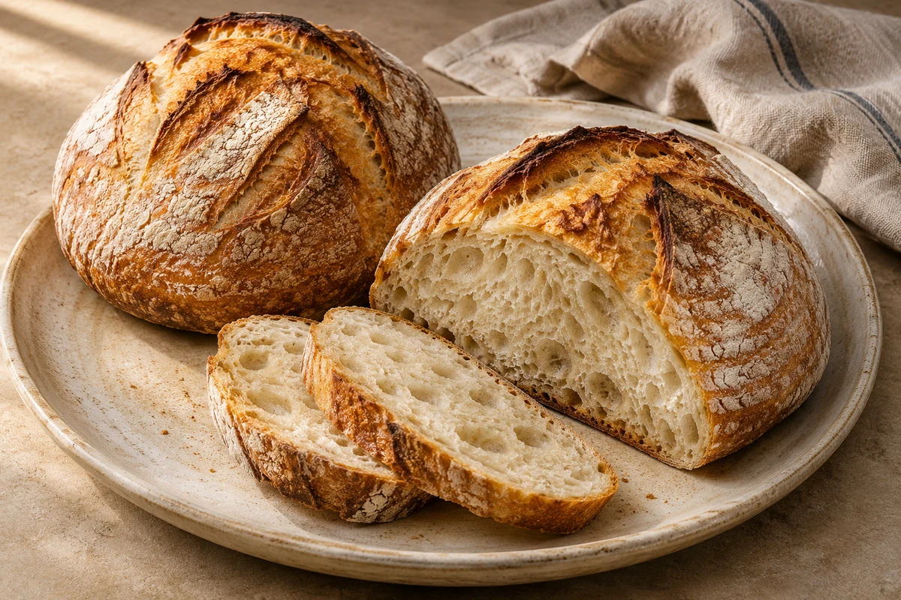

Bread
Sourdough
Two rustic sourdough loaves with a crisp crust and airy centre. Makes 2 loaves, with 12–15 slices each. Includes starter, levain and overnight proving instructions.
Levain and bread quantities scale; the starter batch stays fixed.

Ingredients
For the starter
For the levain
For the bread
Starter flour allowance: the four listed feeds use 200 g of the 250 g. Keep the remainder for extra feeding if needed. Ongoing refreshes need additional flour and water (100 g of each per refresh). Starter feeds do not scale with loaf count.
Method
Day 1 — Start the starter
Mix 50 g flour with 50 g tepid water in a jar or plastic container. Incorporate all the flour and leave, loosely covered, at room temperature for 24 hours.Day 2
Mix 50 g flour with 50 g tepid water and stir into yesterday’s mixture. Incorporate all the flour and leave, loosely covered, at room temperature for another 24 hours.Day 3
Mix 50 g flour with 50 g tepid water and stir into yesterday’s mixture. Incorporate all the flour and leave, loosely covered, at room temperature for another 24 hours.Day 4
You should start to see activity and bubbles forming on top. Mix 50 g flour with 50 g tepid water and stir into the mixture. Incorporate all the flour and leave, loosely covered, at room temperature for another 24 hours.Day 5
The mixture should be active and ready for making your levain. If it is not bubbling, continue to feed it daily until it is. When ready, it should smell like yogurt.Keep your starter
Keep the starter in the fridge, where it will stay dormant. About 24 hours before use, pour off half and feed with 100 g flour and 100 g water. Leave at room temperature to become active again. A starter that has been dormant longer may need repeated refreshes: pour off half, then replace with fresh flour and water. A teaspoonful floating in warm water can be a useful readiness check; also look for reliable rising and bubbling after feeding.Make the levain
Mix 1 tbsp starter with 100 g flour and 100 g water in a separate bowl, keeping the original starter as a back-up. Leave for about 8 hours at room temperature until active. A teaspoonful should float in warm water.Mix the bread dough
Pour 600 g tepid water into all the levain and stir with a rubber spatula; a few unmixed bits are fine. Add 1000 g flour and mix to a rough dough, incorporating all the flour with no dry patches on the bowl. Cover and leave somewhere warm for at least 30 minutes, or up to 4 hours.Add salt
Sprinkle over 20 g fine sea salt and add the remaining 50 g water. Pinch and scrunch the salt and water through the dough with your hands. If it becomes stringy, keep working until smooth. Leave for another 15 minutes.Stretch and fold
Wet your hands, grab the dough from one side and stretch it over itself, then repeat from the other side. Pick up the dough and curl it around onto itself, then cover and leave for 20–30 minutes. Repeat twice more, making three sets in total. Leave for another 2–3 hours until it has risen by about 30% and looks bubbly and soft.Divide and pre-shape
Scrape the dough onto a lightly floured work surface and divide into 2 equal portions, one per loaf. Fold each piece onto itself to make a ball. Leave uncovered for 30 minutes; the balls will spread.Shape and chill
Generously flour one proving basket per loaf. Scrape each dough ball from the surface and fold it onto itself to make a tight ball, trapping the air inside. Put into a basket seam-side up. Refrigerate overnight, or for up to 18 hours. Repeat for each loaf.Bake
Heat the oven to 240°C / 220°C fan / gas 9 with a suitable lidded casserole dish inside. Cut baking parchment slightly larger than the loaf base. Carefully remove the hot dish and lid. Invert one loaf onto the parchment and score the top at an angle. Working quickly, use the parchment corners to lower it into the dish. Cover and bake for 30 minutes, then uncover and bake for another 10 minutes, or longer for a darker crust. Carefully lift out with a spatula and cool on a wire rack to room temperature before slicing. Repeat with each remaining loaf.
Tips & leftovers
Storage & leftovers
Let the loaf cool completely, then store wrapped in a clean bread bag or bread bin in a cool, dry place. Eat within 2 days for best texture; refrigeration makes plain bread stale faster. Discard the whole loaf if mould appears.
Freezing
Slice cooled bread, wrap well and freeze for up to 2 months for best quality. Separate slices so you can take out only what you need. Thaw covered at room temperature, or toast individual slices from frozen.
Reheating
Toast slices, or refresh a loaf briefly in an oven at 180°C / 160°C fan. Heat only what you need so repeated warming does not dry it out.
Substitutions
Use strong white bread flour as written for the intended hydration. Wholemeal absorbs more water and changes proving, so substitute only a small part initially. Keep starter maintenance separate from loaf scaling.
Keeping leftovers safe
These notes are for the baked, unfilled loaf. Keep bread dry and well wrapped; discard the whole loaf if mould appears. Once you add perishable fillings or toppings, follow their fridge storage guidance instead. Keep the freezer around −18°C and take out only the slices you need.
Food-safety guidance: Food Standards Agency: chilling and freezing · reheating leftovers.